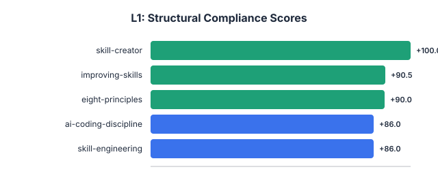
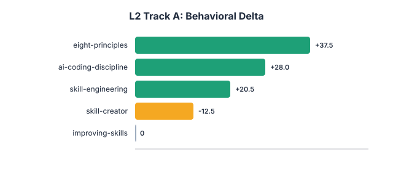
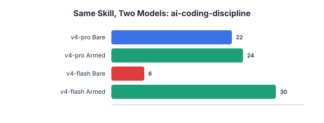
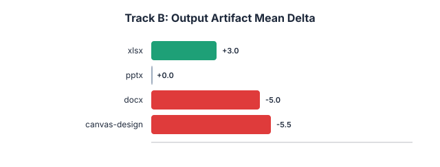
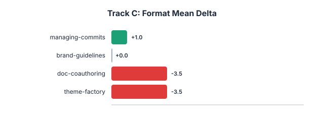
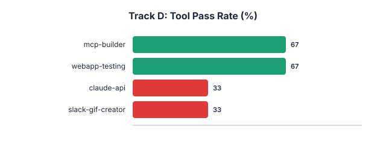
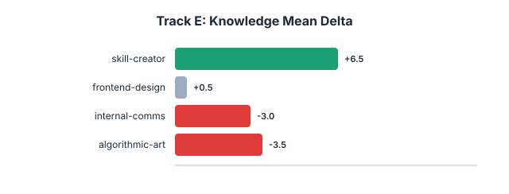

All data from real API-based evaluations. 21 skills across 5 tracks. 157+ API calls.



Right chart: Same skill (ai-coding-discipline, Rule 1) tested on two model tiers. pro: Δ=+2 (already correct), flash: Δ=+24 (skill is critical).




| Track | Skill | Metric | Score |
|---|---|---|---|
| A | eight-principles | Delta / 50 | +37.5 |
| A | ai-coding-discipline | Delta / 50 | +28.0 |
| A | skill-engineering | Delta / 50 | +20.5 |
| A | skill-creator | Delta / 50 | -12.5* |
| A | improving-skills | Delta / 50 | N/A* |
| B | xlsx | Mean Delta / 30 | +3.0 |
| B | pptx | Mean Delta / 30 | 0.0 |
| B | docx | Mean Delta / 30 | -5.0 |
| B | canvas-design | Mean Delta / 30 | -5.5 |
| C | managing-commits | Mean Delta / 15 | +1.0 |
| C | brand-guidelines | Mean Delta / 15 | 0.0 |
| C | doc-coauthoring | Mean Delta / 15 | -3.5 |
| C | theme-factory | Mean Delta / 15 | -3.5 |
| D | webapp-testing | Pass Rate | 67% |
| D | mcp-builder | Pass Rate | 67% |
| D | claude-api | Pass Rate | 33% |
| D | slack-gif-creator | Pass Rate | 33% |
| E | skill-creator | Mean Delta / 20 | +6.5 |
| E | frontend-design | Mean Delta / 20 | +0.5 |
| E | internal-comms | Mean Delta / 20 | -3.0 |
| E | algorithmic-art | Mean Delta / 20 | -3.5 |
* skill-creator (Track A): process skill, underrated by single-turn API. improving-skills (Track A): tool-dependent, needs Track D. See Limitations in README.